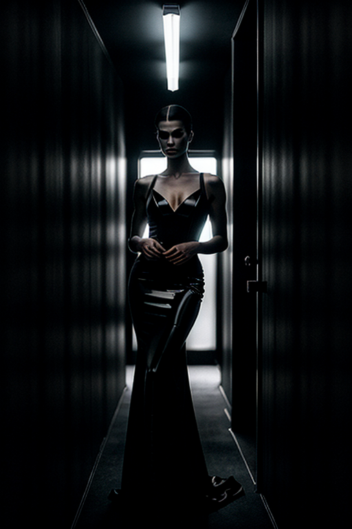
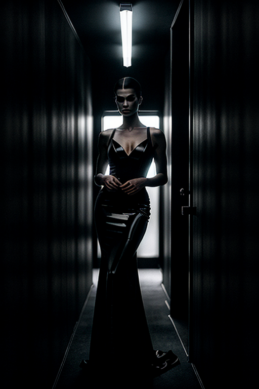

This set explores dark girl introspective through studio aesthetics and romantic tone under overcast. Compositions use wide shot with minimal set, keeping focus clear and tidy. Details like retro styling and balanced colors make browsing easy.


 



 -->
-->This gallery presents 20 curated images, including: how to make dark aesthetic pictures; page; page; page; page.